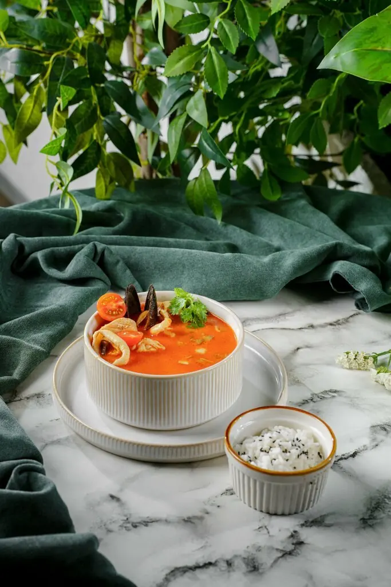
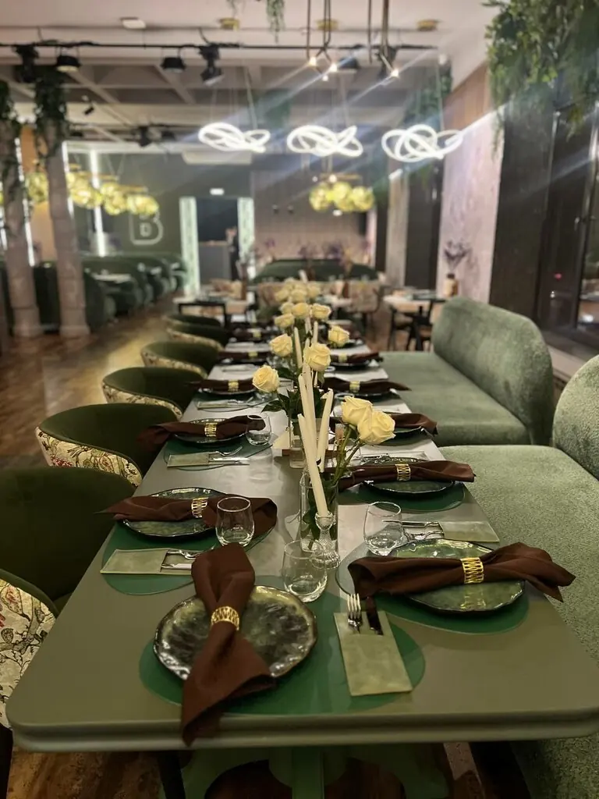
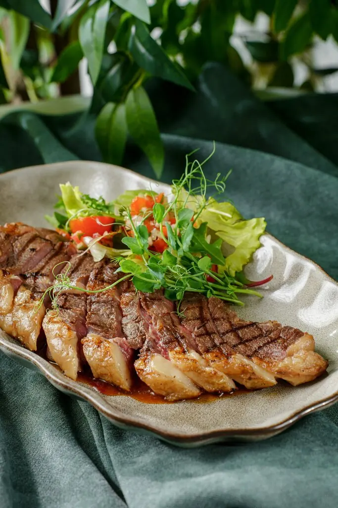
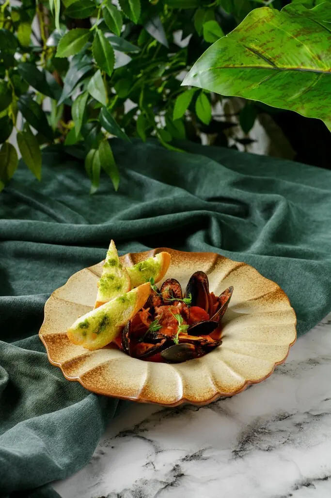
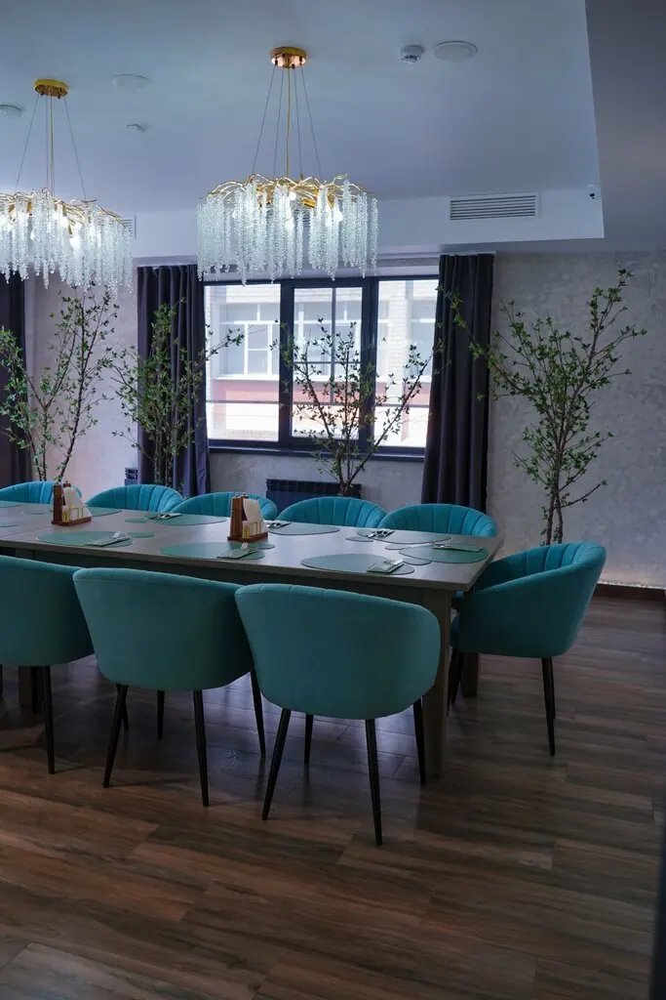

Первые всходысупы и салаты
- Том ям690 ₽
- Тёплый салат с говядиной770 ₽
- Салат с баклажанами560 ₽
Оранжерея для людей: зелёный бархат, золотые шары под потолком и кухня, от которой гости расцветают.
4,4 · 80 оценок



Часть меню с Яндекс Карт, цены уточняйте у официанта.

Для юбилея, выпускного или свадьбы есть отдельный банкетный зал. Гости отмечают его красоту, внимание официантов и мангал, который подогревают без напоминаний.
Всё очень вкусно, сытно и красиво. Отдельный банкетный зал очень красивый, как и весь интерьер заведения.Ирина К.
Очень понравилось! Всё было на высшем уровне. Приятная атмосфера, отличный диджей с классной музыкой.Анастасия Стадник
Лимонад вкуснейший, люля тают во рту, свинина приятно удивила сочностью. Рыба была прекрасна.Наталья Околито